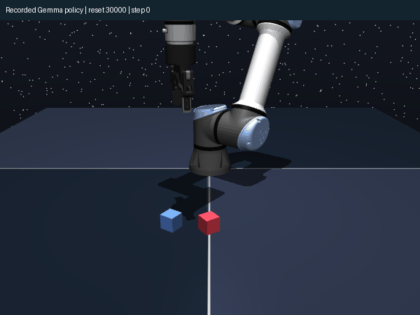

NEURALNETWORKS · SAVED EXPERIMENT FINDINGS · NOVEMBER 2026
Borrowed Geometry:
what the robot tests actually found
Five learned policies, 600 completed evaluation rollouts, and one complete matched comparison seed.
1. Strongest supported findings
Frozen layers can support learned robot control in this setup, but the completed comparison does not demonstrate an advantage specific to pretrained matrix structure. With 16 training demonstrations, pretrained Gemma and a randomized-linear-matrix control both succeeded on 30/60 familiar-target episodes. They both dropped to 9/60 on shifted targets. Recorded results
| Training seed 42 | Familiar targets | Shifted targets |
|---|---|---|
| Pretrained Gemma | 30/60 (50.0%) | 9/60 (15.0%) |
| Random linear matrices | 30/60 (50.0%) | 9/60 (15.0%) |
| Scrambled matrices | 26/60 (43.3%) | 8/60 (13.3%) |
| Small trained MLP | 11/60 (18.3%) | 9/60 (15.0%) |
All methods use the same demonstration data and test reset seeds. This is one training seed, not a statistically established ranking. For pretrained familiar-target success, the within-policy 95% Wilson interval is 37.7–62.3%; it does not quantify variation across training seeds.
A second pretrained controller achieved 25/60 familiar and 8/60 shifted successes. Its matched random, scrambled, and MLP controls did not finish. It is reported separately and is not averaged into an unequal comparison. All completed policies
Equal success rates concealed different strengths. On familiar targets, the pretrained and random controllers both succeeded on 18 episodes; each uniquely succeeded on another 12. Their union is 42/60 (70%). On shifted targets, the union is 17/60. These are hindsight upper bounds for a perfect selector, not measured routing or recovery performance. Paired episode counts
Learning occurred with very stable neuron response patterns. For the pretrained seed-42 controller, the median mean-centered cosine between initial and selected-checkpoint neuron responses was 0.99797 across the same 128 states. The median response-norm ratio was 0.99839. Parameter hashes confirmed the block remained frozen. Audit · Per-neuron measurements
A lower validation loss did not imply better closed-loop control. The selected small MLP had validation imitation loss 0.15258, lower than pretrained Gemma’s 0.17830, yet familiar-target success was 11/60 versus 30/60. This is one comparison, but it directly motivates evaluating behavior rather than selecting robotics claims from embedding similarity or prediction loss alone. Validation losses · Behavior
2. What the controls establish—and what they do not
The randomized control replaces each linear matrix with Gaussian entries matched to its mean and standard deviation. The scrambled control independently permutes each matrix’s rows and columns, preserving its singular values and element values while disrupting relationships between matrices. Both retain pretrained normalization vectors and the layer scalar. Thus, they are not controls for removing every effect of pretraining. Executed implementation
The small MLP has 155,834 trainable parameters; the frozen-layer interfaces have 155,909. The latter also use 412,898,305 frozen parameters. Trainable counts are matched closely, but total capacity and compute are not. The frozen variants’ advantage over the MLP in this seed cannot uniquely identify language-derived geometry.
A separate feasibility run trained the small MLP on 256 demonstrations for 2,000 steps and reached 39/40 successes in both conditions. That run used different evaluation resets and more data/training. It shows the task is learnable; it is not a matched sample-efficiency comparison. Baseline run ID
3. The connection to your robot team
Abay’s Borrowed Geometry paper reports robot control using a frozen pretrained block with learned interfaces. These experiments exercise that architectural idea using actual Gemma weights and learned robot policies. The specific pretrained-weight advantage remains unresolved here.
The most concrete team connection is complementary failure. Two controllers with identical aggregate success rates solved different physical episodes. That gives a measurable reason to study a router or backup controller. A successful system must detect which controller is struggling and switch without losing progress; a 70% hindsight union does not demonstrate that ability.
A second connection is interface compatibility. Sharing frozen weights may still leave separately trained encoders and decoders using incompatible representations. A paired-state alignment experiment was prepared, but not run. No result about shared memory, mixture-of-experts routing, multiple arms, or recursive self-improvement is claimed.
4. Most consequential open questions and small next tests
- Is the frozen-layer benefit reproducible? Finish matched random/scrambled/MLP controls for seeds 1337 and 2024. This is the first priority before claiming a method ranking.
- Does pretraining matter beyond scale and architecture? Add normalization-reset and same-width frozen-random feature controls; keep data and model-selection rules fixed.
- Where did the robot behavior get learned? Keep the trained decoder but restore the initial input interface, then perform the reverse swap. Measure completion on the same held-out reset states.
- Can complementary errors become real recovery? Compare a fixed-budget progress-triggered switch against each individual policy and a random-switch control. Report actual completion; retain the oracle union only as an upper bound.
- Can agents exchange representations? Swap two learned interfaces around the same frozen block. Fit an alignment on paired training states, with shuffled-pair and simple regression controls; evaluate on fresh physics resets.
All five items are proposed follow-ups. No additional experiment was launched after the stop request.
Five specific questions for Abay
- Can you share the exact model revision, original robot adapters, preprocessing, and data split so we can isolate why our randomized control can match the pretrained block in this setting?
- Does the claimed geometry advantage survive controls that preserve singular values and normalization scales, and how sensitive is it to expert demonstrations versus offline play data?
- Have you measured whether separately trained interfaces around one frozen layer can exchange hidden states or action decoders successfully?
- For the lithium-neuron checkpoints, can we compare identical examples with signed activations, raw norms, and fixed coordinate identity while separating upstream-input changes from neuron-weight changes?
- What signal could predict which controller will fail early enough for a useful handover, given that lower imitation loss did not predict better closed-loop success here?
A recorded robot rollout

Methods and evidence
What actually ran
OGBench two-cube task 1 in MuJoCo, one arm; 16 training demonstrations with noisy execution and clean expert labels, 32 validation demonstrations, 1,000 AdamW steps, batch 128, learning rate 0.0003. The lowest validation loss among steps 0, 100, 250, 500, 750, and 1000 selected the evaluated checkpoint. Familiar targets jitter ±3 cm; shifted targets move 6–10 cm in x. Each condition uses 60 paired reset states and a 150-step horizon. No per-method tuning was performed.
The 32 validation trajectories are additional data beyond the 16 training demonstrations. The 128-state neuron panel is sampled from those validation trajectories, so its states are correlated and are not independent semantic concepts. Signed gated-MLP activations are compared at fixed neuron coordinates; the surrounding input interface can change immediate neuron inputs despite fixed physical states.
Model identity, exactness, and scope
Public Gemma 4 31B revision 5bbc2fb1…, layer 26. The extracted block matched the official Transformers implementation exactly in the logged numerical check. Frozen-parameter hashes were unchanged after each completed frozen-model training run.
The block receives one token and no KV cache, making attention softmax equal to one. Q/K cannot influence this computation; this is not a test of an attention-copy mechanism. The public model is multimodal. We did not test Abay’s original lithium-neuron model/checkpoints, a real robot, multi-arm coordination, a learned router, collision safety, or recursive self-improvement.
Stop status and reproducibility
The initial run ended after three complete models. A resumable run completed the MLP seed 42 and pretrained seed 1337 before cancellation at your request. Random seed 1337 training was incomplete and has no reported evaluation. Five trained policy adapters, selected-checkpoint metadata, raw completed episode records, and source are preserved.
Read README.txt before reproducing anything. The archive excludes the approximately 958 MB frozen layer, which the supplied downloader can retrieve. The prepared interface-exchange script is clearly marked NOT_RUN and is not presented as tested code.